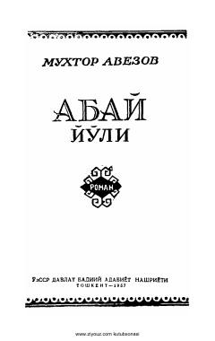

AYBuyuk qozoq shoiri Abay Qo'nonboyev hayoti haqidagi mashhur epopeyaning birinchi kitobi.
Qozog'iston adabiyotining yirik vakili Muxtor Avezovning mashhur 'Abay yo'li' epopeyasining birinchi qismi. Asarda qozoq xalqining buyuk shoiri va mutafakkiri Abay Qo'nonboyevning hayoti va ijodiy yo'li keng qamrovli tasvirlangan.